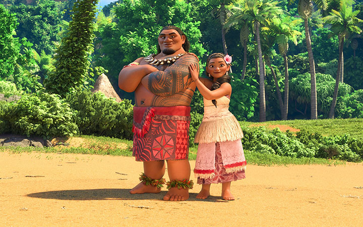

Born on the island of Motunui. Moana is the tribe's chief's daughter. She sets out for a famous island with
the demigod Maui, coming from a line of voyagers. Along the way, they face everything the ocean has to offer
while discovering the power of perseverance and faith.
Embarking on a risky expedition to save her people, a brave youngster sets sail.
The once-powerful demigod
Maui, who Moana encounters along the road, helps her on her quest to become a skilled wayfinder. Together,
they embark on an action-packed journey across the ocean while battling impossibly difficult circumstances
and monstrous monsters. Along the way, Moana completes the illustrious quest of her ancestors and learns the
one thing she has always sought: her own identity.A sea-loving, independent traveler, Moana. Even though she
experiences self-doubt occasionally, she takes
great pleasure in who she is and isn't afraid to take on new challenges. She takes on new challenges and
responsibilities with the utmost seriousness, and even when everything appears lost, she will maintain her
ground and fight for what she cherishes.
Moana is vibrant. She enjoys the sea and is fearless and physically capable. Though she has moments of
self-doubt, she is too stubborn to back down from something new. Moana can present herself as strong despite
her size.
Moana "stands out from the crowd," as Gramma Tala describes it. She adores the water, is fearless, and
physically capable. Though she has moments of self-doubt, she is generally too stubborn to back down from
new endeavors. Moana takes new experiences and tasks seriously and will battle for what she cherishes even
when everything appears to be lost. Despite her lack of experience outside of Motunui, Moana may present
herself as an imposing force despite her small stature, having defeated the most terrifying monsters and
inconceivable hurdles across Oceania's oceans while depending almost entirely on her own cleverness.
Knowledge and Skills
Though Moana does not possess the ability to bend water to her will, she does share a unique and exclusive
relationship with the ocean itself. When Moana needs help, she can rely on the water. When she first set
sail to
travel beyond the reef, her sailing skills were lacking, and she was nearly killed by the fierce currents.
Despite the challenges she faced on her journey, Moana refused to give up and continued going with her
strength
and bravery. She musters the strength to confront the lava demon alone. She developed throughout her
experience.
Her enthusiasm and perseverance are contagious as she befriends Maui, the self-absorbed wind and sea
demigod. By the end of the movie, Moana has won everyone's heart because she is a selfless leader – a
servant leader. She is motivated not only by a desire to aid her people, but also by a desire to restore
equilibrium. Moana is one of my favorite Disney characters of all time because she taught me the value of
conscientious leadership, which is very important .

Family and friends
Moana is the daughter of Chief Tui and Sina. Chief Tui's mother and Moana's grandmother is Gramma Tala. Tala
was
known as the "village crazy lady" due to her interest in ancient myths and legends. Tala, her granddaughter,
has
a love for water and exploring. Moana is chosen by the ocean to travel the sea and save the world with the
help
of the shape-shifting demigod Maui.
Moana had no idea that her ancestors were voyagers until she learned this from Grandma Tala. Learning her
ancestors’ history validated Moana’s desire to go beyond the reef and save her people. You could visibly see
the joy in her eyes as she discovered not only the truth of her ancestors but of the understanding of where
her love for the Ocean comes from.
“Sometimes our strengths lie beneath the surface... Far beneath, in some cases.” The quote
encompasses so much. Nothing in life is definite, but anything is possible if you are willing to work hard
and
make some sacrifices along the way.
We all have strength within us, but it takes a little more effort to find it. 3